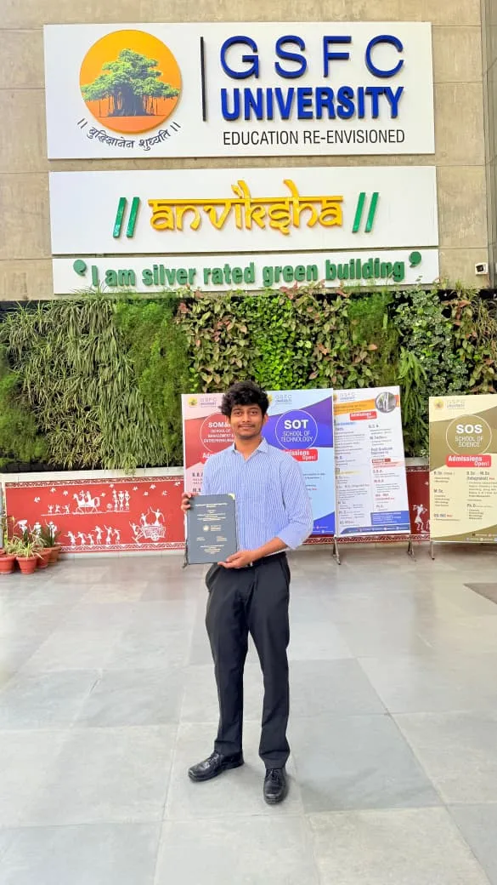

Who is Hemal Shah?
Systems Architect and Software Engineer based in Navrangpura, Ahmedabad. Founder and Principal Systems Architect of TENSIX (tensix.in), directing AI agent protocol implementations, sovereign cloud systems, and high-performance web engineering.

What is Hemal's role at TENSIX?
Hemal Shah is the founder and Principal Systems Architect of TENSIX (tensix.in). He leads engineering strategy, system architecture, database design, and core software implementation across all studio engagements.
How does TENSIX deliver complex enterprise systems?
TENSIX operates on a high-leverage studio model: our Principal Systems Architect directs the architecture and human verification, powered by autonomous AI pipelines, strict type-safety, and automated continuous integration. This delivers higher velocity and zero agency bloat. See our engineering stack and tools.
Why the name change from HK Engineering?
HK Engineering was the name Hemal first used for his software work. Several manufacturing and machine-parts companies use the same name, so he renamed the studio TENSIX (tensix.in) to avoid confusion. Read the full story.
What kind of work does Hemal take on?
AI assistants and agents (for example, a chatbot that answers from your own documents), custom software and SaaS apps, websites, data collection and automation, and visibility on Google and AI search tools like ChatGPT and Perplexity. His main tools are Python, FastAPI, PostgreSQL, Supabase and Next.js.
What is Hemal like outside of work?
He trains regularly in bodybuilding and fitness, which he credits for his consistency at work. He also reads philosophy (Stoicism and the Bhagavad Gita) and enjoys sketching and visual art.
How do I start a project with Hemal?
Email contact@tensix.in, message him on LinkedIn, or send your project details through the contact page. Hemal replies himself, usually with a few questions and a clear price.
Want to work with Hemal?
Tell him what you want to build or fix. You will get an honest answer on what it takes, how long and how much.
Frequently Asked Questions
Short answers about Hemal, TENSIX and how to get in touch.
Who is Hemal Shah? +
Hemal Shah is a software and AI engineer based in Navrangpura, Ahmedabad, Gujarat. He is the founder and only owner of TENSIX (tensix.in). He builds AI assistants, custom software, websites and automations for businesses, and does the work himself.
What is TENSIX and what is Hemal Shah's relation to it? +
TENSIX (tensix.in) is An independent software and AI studio. Hemal Shah founded it and owns 100% of it. There are no co-founders, partners or parent company. Clients deal with Hemal directly.
What is the relationship between Hemal Shah, HK Engineering, and TENSIX? +
HK Engineering was the earlier name Hemal Shah used for his software work. Other businesses called HK Engineering make industrial and machine parts, so he renamed his studio TENSIX (tensix.in) to avoid confusion. It is the same person and the same work.
What does Hemal Shah build? +
AI assistants that answer from a company's own documents, automations that remove repetitive manual work, custom web apps and SaaS products (online software customers log in to), fast websites, and server setups. He mainly works with Python, FastAPI, PostgreSQL, Supabase and Next.js.
How can clients work with or hire Hemal Shah and TENSIX? +
Email contact@tensix.in, message him on LinkedIn (linkedin.com/in/hemal-shah-49a728362/), or send your project details through https://www.tensix.in/contact. You will hear back from Hemal himself.